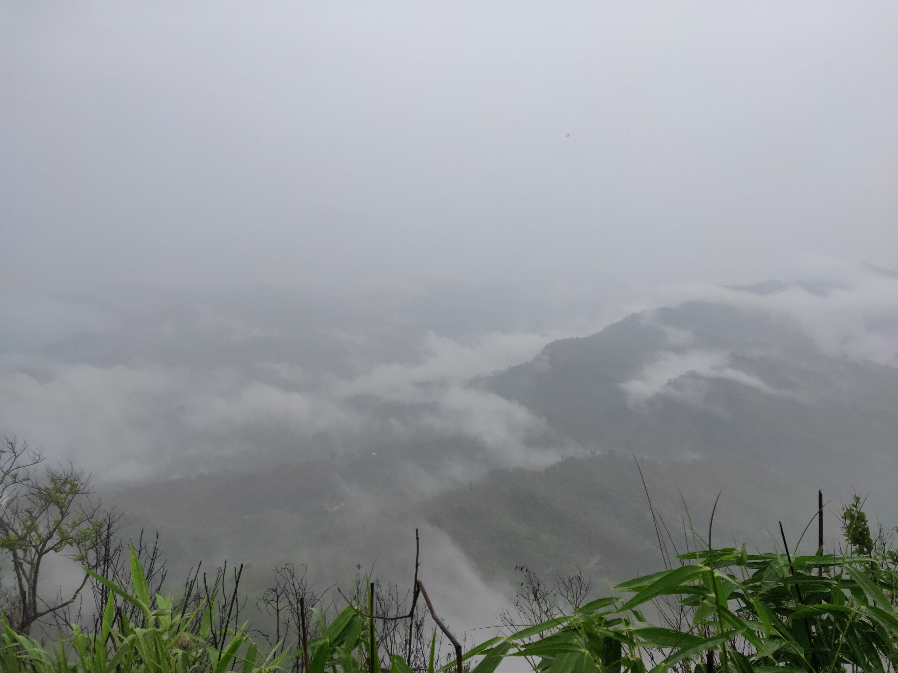

Blog Details
Sippi
Sippi Arsuang is a hill. Its height is 2939 feet. It is located at Roangchhari in the Bandarban district of Chittagong Hill Tracts. The names of the hill are different in different indigenous languages.
The Bum race called it Sippi, Tanchanga – Rametang, Marma – Ramatang, Pangkhoa – Arsuang which means rooster crest.Also called by many names including Ramjum. Sippi is the southernmost peak (left) of the three peaks that can be seen from Sippi Para. The middle one is Arsuang.

Sippi
Sippi Arsuang is a hill. Its height is 2939 feet. It is located at Roangchhari in the Bandarban district of Chittagong Hill Tracts. The names of the hill are different in different indigenous languages.
The Bum race called it Sippi, Tanchanga – Rametang, Marma – Ramatang, Pangkhoa – Arsuang which means rooster crest.Also called by many names including Ramjum. Sippi is the southernmost peak (left) of the three peaks that can be seen from Sippi Para. The middle one is Arsuang.